")
Definition des Verlegebereiches mittels verschiedener Verlegeoptionen.
·Bevor oder während Sie eine Staffel verlegen, können Sie die Darstellung der Staffel individuell anpassen oder eine vorgegebene Form auswählen. Die Darstellungsoptionen stehen Ihnen bis zur Bestätigung des Verlegefaktors zur Verfügung.
·Außer bei den freien Verlegungen wird der Maßstab für die Staffel aus der Geometrie übernommen.
·Die folgende Meldung erscheint nach dem Bestätigen des Verlegefaktors, wenn eine neue Position mit einem größeren Durchmesser erzeugt wird:
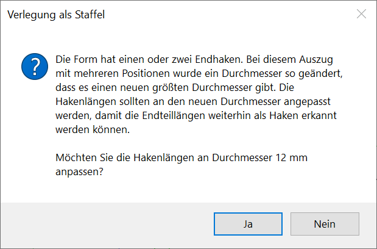 |
Sie haben die Möglichkeit, die Hakenlängen der Auszugsform an den neuen Durchmesser anzupassen.
Siehe: Hakenlängen an den Stabdurchmesser anpassen
Die Darstellung der endgültigen Verlegung kann in sechs verschiedenen vorgegebenen Formen (Darstellungsoptionen) erfolgen. Darstellungsoptionen
In der Übersicht ist der Anfang und das Ende durch einen Kreispunkt markiert. Auf diese Darstellung beziehen sich die folgenden Abfragen. Der Verlegebereich erstreckt sich vom linken Anfangspunkt zum rechten Endpunkt. Die Stäbe werden im Winkel von 90° zum Verlegebereich angeordnet. Beliebige DarstellungEine weitere Möglichkeit besteht darin, die Stäbe der Verlegung mittels der Option beliebige D. auszuwählen, die gezeichnet werden sollen. 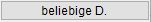 Diese Schaltfläche erscheint unter den Darstellungsoptionen, nachdem Sie einen Verlegebereich definiert haben und während die Abfrage des Verlegefaktors aktiv ist. Wenn Sie diese Schaltfläche anklicken, werden wieder alle Stäbe gezeigt. §Klicken Sie die Stäbe an, die nicht gezeigt werden sollen. [Welche Eisen nicht darstellen]. Die ausgewählten Stäbe werden markiert. Wenn Sie einen markierten Stab erneut anklicken, wird die Markierung wieder aufgehoben.
§Bestätigen Sie die Darstellung mit Rechtsklick oder . Beispiel:
|
||||||||||||||||||||||||||||||||||||

Nachdem Sie einen Verlegebereich definiert haben und während die Abfrage des Verlegefaktors aktiv ist, können Sie die Darstellung der Verlegung ändern.
Anfang und Ende der Verlegestaffel bearbeiten(Diese Optionen sind nur verfügbar, wenn der Stahlquerschnitt über den Abstand der Stäbe ermittelt wurde.)
Staffel ausrichtenKlappe Spiegelt die Staffel um die Basislinie. Die Spiegelung ist sofort sichtbar. NeigWi Dreht die Staffel um einen bestimmten Winkel. [Neigungswinkel].
SpifoX Spiegelt die Staffel um die X-Achse. SpifoY Spiegelt die Staffel um die Y-Achse. Wenn in der Staffel die Eisen als Form bzw. mit mehr als einer Teillänge abgebildet werden, kann es erforderlich sein um die X- oder Y-Achse zu spiegeln. Die Spiegelung ist sofort sichtbar und alle Optionen werden wieder eingeblendet. Beispiel:
|
Wenn der Haken als Staffel verlegt wird (einzelne Teillänge), kann die Darstellung der Verlegung angepasst werden. [Enter-Taste = ändere Verlegung]. Beim ersten Vorschlag wird die Längenänderung in die eine Richtung angeboten. Um den nächsten Vorschlag anzuzeigen, drücken Sie die rechte Maustaste oder die Eingabetaste. Dabei wird die Längenänderung in die andere Richtung durchgeführt. Um den dritten Vorschlag anzuzeigen, klicken Sie nochmals die rechte Maustaste. Hier wird jeweils um die halbe Längenänderung nach beiden Seiten verschoben. Wenn Sie die rechte Maustaste nochmals drücken, wird der vierte Vorschlag angezeigt. Es wird die ursprüngliche Länge gezeichnet, nichts wird geändert. Sie können die rechte Maustaste oder die Eingabetaste beliebig oft drücken, um die verschiedenen Verlegungen darzustellen. §Geben Sie 0 (Null) bei dem Vorschlag ein, den das Programm übernehmen soll. Bestätigen Sie mit der Eingabetaste. |
So wird's gemacht:
§Wählen Sie über die Schaltflächen oben links (unter der Eingabezeile) die Art der Verlegung.
Der Verlegebereich wird über die X- und Y-Koordinate des Anfangs- und Endpunktes beschrieben. |
|
Der Verlegebereich wird auf eine Linie/Kreis = Rand bezogen. Am Kreis werden die Stäbe radial verlegt. |
|
Der Verlegebereich wird rechtwinklig von einer Bezugslinie = Rand weg definiert. |
|
Freie Definition des Verlegebereiches. |
|
Der Verlegebereich wird in zwei Staffeln aufgeteilt, die kammartig ineinander greifen. Anfang und Ende werden durch zwei gegenüberliegende Linien bestimmt. |
|
Der Verlegebereich wird durch zwei parallele Linien gebildet. Die Stäbe werden mittig darauf angeordnet. |
|
Es wird kein Verlegebereich definiert, sondern die Stäbe werden einzeln mit festgelegter Reihenfolge bzw. frei verlegt. |
|
Der Verlegebereich wird auf einen Kreisbogen = Rand bezogen. Die Stäbe werden parallel zueinander verlegt. |
Hinweis: |
|
|
Bei Staffeln parallel am Bogen können nur Durchmesser, Abstand und Neigungswinkel geändert werden. Klappen ist nachträglich nicht möglich. Generiert werden können diese Staffeln auf die Darstellungen [1+1+1], [3+3] oder alle. Beim Versuch zu Verschieben oder eine Lücke zu erzeugen, werden Sie durch eine Meldung darüber informiert, dass diese Aktionen nicht möglich sind. |
Verlegeoptionen
Der Verlegebereich wird über die X- und Y-Koordinate des Anfangs- und Endpunktes beschrieben. Liegt der Anfangs- oder Endpunkt der Staffel an einer schrägen Linie, ist es ratsam, das Arbeitskoordinatensystem zu drehen. Alternativ können Sie auch die Hilfsfunktion S [Schnitt] verwenden, um den Anfangs- und/oder Endpunkt an den Schnittpunkt zweier Linien zu setzen. Tippen Sie in das Eingabefeld ein S ein und klicken Sie anschließend die Bezugslinie an. Mit Rechtsklick können Sie die Betondeckung übernehmen. Wenn Sie bei einem Parameter (X oder Y) für den Anfangs- und/oder Endpunkt die Hilfsfunktion verwenden, achten Sie darauf, auch beim anderen Parameter die Hilfsfunktion einzugeben!
[XBer-Anf]
§Klicken Sie eine Bezugslinie für den Anfangspunkt an.
Falls Sie die voreingestellte Betondeckung [nom c] übernehmen möchten, achten Sie darauf, die Linie mit dem Cursor auf der Seite anzuklicken, zu der die Betondeckung berücksichtigt werden soll.
Die Linienkennung und die voreingestellte Betondeckung werden in die Eingabe geschrieben.
§Geben Sie nach der Linienkennung den Wert für die Betondeckung mit dem entsprechenden Vorzeichen ein und bestätigen Sie mit der Eingabetaste.
Mit Rechtsklick können Sie die voreingestellte Betondeckung übernehmen. Wenn kein Abstand angegeben werden soll, geben Sie als Differenz 0 (Null) ein.
[YBer-Anf]
§Gehen Sie für die Angabe des Y-Wertes wie bei [XBer-Anf] beschrieben vor.
Die Zeichenmarke wird an den Anfangspunkt gesetzt.
[XBer-Ende]; [YBer-Ende]
§Klicken Sie Bezugslinien für den Endpunkt wie bei [XBer-Anf] beschrieben an.
[Verlege-Faktor]
Die Angabe des Verlege-Faktors ist für die jeweils erste Verlegung erforderlich. Handelt es sich um eine Wiederholung einer, an anderer Stelle gezählten, Verlegung, können Sie auch den Wert 0 (Null) eingeben.
Wenn diese Verlegung in der Stahlliste berücksichtigt werden soll, geben Sie einen Wert ≥1 ein. Der Auszugstext wird nach jeder Änderung aktualisiert.
Im linken Abfragebereich wird Ihnen der aktuell eingestellte Bauteilfaktor angezeigt. Diesen können Sie ggf. unter [Formst | nBautl | Voreinstellg] ändern.
§Geben Sie den Verlege-Faktor ein, mit dem die Anzahl der verlegten Stäbe multipliziert werden soll, oder klicken Sie einen Wert in der Dropdown-Liste an und bestätigen Sie mit Rechtsklick.
Sie können sofort einen weiteren Verlegebereich definieren.
Beispiel:
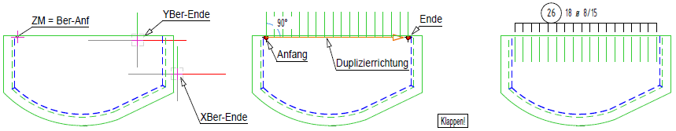 |
Der Verlegebereich wird auf eine Linie/Kreis = Rand bezogen. Am Kreis werden die Stäbe radial verlegt.
[Welcher Rand]
§Klicken Sie den Rand auf der Seite an, auf der die Staffel verlegt werden soll.
[Randabstand]
Als Randabstand wird der nom c-Wert vorgeschlagen. Mit Rechtsklick können Sie den in der Eingabe stehenden Wert übernehmen.
§Geben Sie einen Wert ein. Wenn dieser negativ ist, wird der Abstand zur anderen Seite gemessen. Schließen Sie die Eingabe mit der Eingabetaste ab.
[Eckab1]; [Eckab2]
Mit negativen Werten wird die Staffel über die Ecke hinaus verlängert.
Eine Bezugnahme auf andere Linien ist nicht möglich. Die Eckabstände beziehen sich auf die angeklickte Randlinie. Sie werden zur Linienmitte hin positiv gemessen.
§Geben Sie jeweils beliebige Werte für die Abstände am Anfang und am Ende ein. Schließen Sie die Eingabe jeweils mit der Eingabetaste ab.
[Verlege-Faktor]
Die Angabe des Verlege-Faktors ist für die jeweils erste Verlegung erforderlich. Handelt es sich um eine Wiederholung einer, an anderer Stelle gezählten, Verlegung, können Sie auch den Wert 0 (Null) eingeben.
Wenn diese Verlegung in der Stahlliste berücksichtigt werden soll, geben Sie einen Wert ≥1 ein. Der Auszugstext wird nach jeder Änderung aktualisiert.
Im linken Abfragebereich wird Ihnen der aktuell eingestellte Bauteilfaktor angezeigt. Diesen können Sie ggf. unter [Formst | nBautl | Voreinstellg] ändern.
§Geben Sie den Verlege-Faktor ein, mit dem die Anzahl der verlegten Stäbe multipliziert werden soll, oder klicken Sie einen Wert in der Dropdown-Liste an und bestätigen Sie mit Rechtsklick.
Sie können sofort einen weiteren Verlegebereich definieren.
Beispiel:
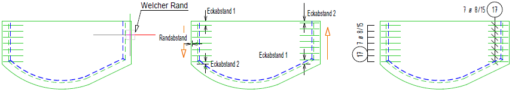 |
Der Verlegebereich wird rechtwinklig von einer Bezugslinie (= Rand) weg definiert.
[Welcher Rand]
§Klicken Sie den Rand auf der Seite an, auf der die Staffel angeordnet werden soll.
[Randabstand]
§Geben Sie einen Abstand zum Rand ein und bestätigen Sie mit der Eingabetaste.
[Staffelbreite]
§Geben Sie die Staffelbreite an und bestätigen Sie diese.
Wenn Sie die Positionsnummer durch Anklicken einer vorhandenen Verlegung angegeben haben, wird hier die dort gespeicherte Verlegetiefe vorgeschlagen. Sie können den Wert mit Rechtsklick bestätigen.
[Verlege-Faktor]
Die Angabe des Verlege-Faktors ist für die jeweils erste Verlegung erforderlich. Handelt es sich um eine Wiederholung einer, an anderer Stelle gezählten, Verlegung, können Sie auch den Wert 0 (Null) eingeben.
Wenn diese Verlegung in der Stahlliste berücksichtigt werden soll, geben Sie einen Wert ≥1 ein. Der Auszugstext wird nach jeder Änderung aktualisiert.
Im linken Abfragebereich wird Ihnen der aktuell eingestellte Bauteilfaktor angezeigt. Diesen können Sie ggf. unter [Formst | nBautl | Voreinstellg] ändern.
§Geben Sie den Verlege-Faktor ein, mit dem die Anzahl der verlegten Stäbe multipliziert werden soll, oder klicken Sie einen Wert in der Dropdown-Liste an und bestätigen Sie mit Rechtsklick.
Sie können sofort einen weiteren Verlegebereich definieren.
Beispiel:
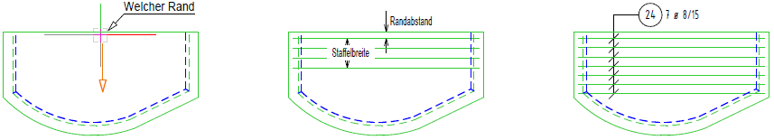 |
Freie Definition des Verlegebereiches.
[Verlegebreite]
Die Staffel wird mit den zurzeit eingestellten Parametern am Cursor dargestellt. Wenn Sie bei der Wahl der Position auf eine Verlegung geklickt haben, wird die Breite dieser Verlegung vorgeschlagen. Mit Rechtsklick können Sie den vorgeschlagenen Wert übernehmen.
§Geben Sie die gewünschte Breite ein und bestätigen mit der Eingabetaste.
[Verlegemaßstab]
Es wird der Maßstab vorgeschlagen, in dem die Auszugsform gezeichnet ist. Unter der Abfrage werden die Standardmaßstäbe in einer Dropdown-Liste angeboten. Klicken Sie auf den gewünschten Maßstab, um diesen zu übernehmen. Sie können auch eine Linie anklicken, dann wird der Maßstab der Linie übernommen.
§Geben Sie den Maßstab in das Eingabefeld ein und bestätigen mit der Eingabetaste.
[Verteilungsrichtung].
§Geben Sie den Winkel direkt in das Eingabefeld ein und bestätigen mit der Eingabetaste.
|
||||||
[Lage]
§Schieben Sie die Staffel an die gewünschte Stelle und legen Sie die Staffel mit Linksklick ab.
[Verlege-Faktor]
Die Angabe des Verlege-Faktors ist für die jeweils erste Verlegung erforderlich. Handelt es sich um eine Wiederholung einer, an anderer Stelle gezählten, Verlegung, können Sie auch den Wert 0 (Null) eingeben.
Wenn diese Verlegung in der Stahlliste berücksichtigt werden soll, geben Sie einen Wert ≥1 ein. Der Auszugstext wird nach jeder Änderung aktualisiert.
Im linken Abfragebereich wird Ihnen der aktuell eingestellte Bauteilfaktor angezeigt. Diesen können Sie ggf. unter [Formst | nBautl | Voreinstellg] ändern.
§Geben Sie den Verlege-Faktor ein, mit dem die Anzahl der verlegten Stäbe multipliziert werden soll, oder klicken Sie einen Wert in der Dropdown-Liste an und bestätigen Sie mit Rechtsklick.
Sie können sofort einen weiteren Verlegebereich definieren.
Beispiel:
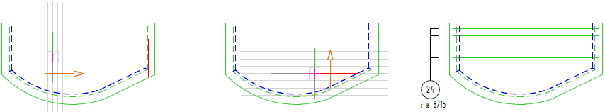 |
Der Verlegebereich wird in zwei Staffeln aufgeteilt, die kammartig ineinander greifen. Anfang und Ende werden durch zwei gegenüberliegende Linien bestimmt.
[1.Linie]; [2.Linie]
§Klicken Sie die zwei Linien an, zwischen denen die Feldbewehrung verlegt werden soll.
Die erste angeklickte Linie wird als Bezugslinie für die Staffeln benutzt.
[Eckab1]; [Eckab2]
Der Eckabstand1 wird an der zuerst angeklickten Linie in Verlegerichtung (positiv) gemessen. Soll der Staffelanfang über die Linie hinaus verschoben werden, müssen Sie einen negativen Wert eingeben. Der Eckabstand2 wird vom Ende der zuerst angeklickten Linie in Richtung auf den Anfangspunkt (positiv) gemessen.
§Geben Sie jeweils einen Wert für den Abstand ein und bestätigen mit der Eingabetaste oder übernehmen Sie die Vorschlagswerte mit Rechtsklick.
[Aufl.1]; [Aufl.2]
Für die Auflagertiefe werden immer pauschal 10 cm vorgeschlagen.
§Geben Sie jeweils einen Wert für die Auflagertiefe ein und bestätigen mit der Eingabetaste oder übernehmen Sie die Vorschlagswerte mit Rechtsklick.
[Verlege-Faktor]
Die Angabe des Verlege-Faktors ist für die jeweils erste Verlegung erforderlich. Handelt es sich um eine Wiederholung einer, an anderer Stelle gezählten, Verlegung, können Sie auch den Wert 0 (Null) eingeben.
Wenn diese Verlegung in der Stahlliste berücksichtigt werden soll, geben Sie einen Wert ≥1 ein. Der Auszugstext wird nach jeder Änderung aktualisiert.
Im linken Abfragebereich wird Ihnen der aktuell eingestellte Bauteilfaktor angezeigt. Diesen können Sie ggf. unter [Formst | nBautl | Voreinstellg] ändern.
§Geben Sie den Verlege-Faktor ein, mit dem die Anzahl der verlegten Stäbe multipliziert werden soll, oder klicken Sie einen Wert in der Dropdown-Liste an und bestätigen Sie mit Rechtsklick.
Sie können sofort einen weiteren Verlegebereich definieren.
Beispiel:
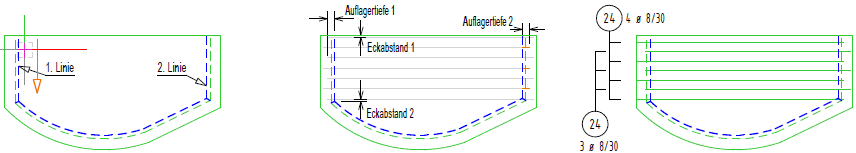 |
Der Verlegebereich wird durch zwei parallele Linien gebildet. Die Stäbe werden mittig darauf angeordnet.
[1.Linie]; [2.Linie]
§Klicken Sie zwei Linien an.
Der Verlegebereich bezieht sich auf die zuerst angeklickte Linie.
[Eckab1]; [Eckab2]
§Bestätigen Sie den Vorschlagswert mit Rechtsklick oder geben Sie einen abweichenden Betrag ein und bestätigen mit der Eingabetaste.
Der erste bzw. letzte Stab wird markiert. Der Verlegebereich wird um das Maß der Betondeckung nach innen vorgeschlagen. Mit negativen Werten können Sie den Verlegebereich über die Länge der ersten Linie hinaus verlängern.
[Versatz]
Durch die Angabe eines Versatzes werden zwei ineinander verzahnte Staffeln erzeugt.
§Bestätigen Sie den Vorschlag (0 = kein Versatz) mit Rechtsklick oder geben Sie ein Maß für den Längsversatz ein und bestätigen mit der Eingabetaste.
[Ausmitte]
Positive Werte verschieben den Schwerpunkt der Staffel(n) in Richtung der zweiten angeklickten Linie.
§Bestätigen Sie den Vorschlag (0 = keine Ausmitte) mit Rechtsklick oder geben Sie einen Wert für die Verschiebung ein und bestätigen mit der Eingabetaste.
[Verlege-Faktor]
Die Angabe des Verlege-Faktors ist für die jeweils erste Verlegung erforderlich. Handelt es sich um eine Wiederholung einer, an anderer Stelle gezählten, Verlegung, können Sie auch den Wert 0 (Null) eingeben.
Wenn diese Verlegung in der Stahlliste berücksichtigt werden soll, geben Sie einen Wert ≥1 ein. Der Auszugstext wird nach jeder Änderung aktualisiert.
Im linken Abfragebereich wird Ihnen der aktuell eingestellte Bauteilfaktor angezeigt. Diesen können Sie ggf. unter [Formst | nBautl | Voreinstellg] ändern.
§Geben Sie den Verlege-Faktor ein, mit dem die Anzahl der verlegten Stäbe multipliziert werden soll, oder klicken Sie einen Wert in der Dropdown-Liste an und bestätigen Sie mit Rechtsklick.
Sie können sofort einen weiteren Verlegebereich definieren.
Beispiel:
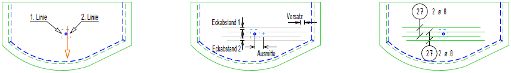 |
Es wird kein Verlegebereich definiert, sondern die Stäbe werden einzeln mit festgelegter Reihenfolge bzw. frei verlegt.
[Maßstab]
Der Maßstab wird vorgeschlagen, in dem der Auszug dargestellt ist. Sie können den vorgeschlagenen Wert mit Rechtsklick bestätigen.
§Geben Sie den Maßstab an, in dem Sie die Stäbe verlegen möchten und bestätigen Sie mit der Eingabetaste.
[FoSpi]; [Neigg]; [BerWi] Diese drei Winkelangaben können jeweils einzeln oder auch in Kombination verwendet werden. Die sich ergebende Darstellung wird im Vorschaufenster angezeigt. |
§Geben Sie einen Winkel an, um den die Form gespiegelt werden soll. [FoSpi].
§Geben Sie einen Winkel an, um die Form zu neigen. [Neigg].
§Geben Sie den Winkel an, um den die Verlegerichtung gedreht werden soll. [BerWi].
[in Reihe]
0 = Nein. Bedeutet, dass jeder Stab für sich an einer beliebigen Stelle abgelegt werden kann.
1 = Ja. Bedeutet, dass die Stäbe exakt mit konstantem Abstand in einer Reihe verlegt werden. Als Wert wird der Betrag aus der Eingabe für Abstand genommen, auch wenn hier die Anzahl gewählt wurde.
[Lage ankl.]
In Reihe: Jeder Klick verlegt einen Stab. Die Verlegerichtung wird durch die Lage des Cursors in Bezug auf den ersten Stab bestimmt. Ist der Bereichswinkel 0°, dann wird nach rechts verlegt, wenn der Cursor rechts vom ersten Stab liegt. Wenn die Verlegung nach links erfolgen soll, müssen Sie sich mit dem Cursor links vom ersten Stab befinden.
Nicht in Reihe: An jeder Stelle, wo Sie mit dem Cursor klicken, wird ein Stab abgelegt.
§Klicken Sie für jeden zu verlegenden Stab einmal die linke Maustaste.
§Beenden Sie die Verlegung mit Rechtsklick.
[Verlege-Faktor]
Die Angabe des Verlege-Faktors ist für die jeweils erste Verlegung erforderlich. Handelt es sich um eine Wiederholung einer, an anderer Stelle gezählten, Verlegung, können Sie auch den Wert 0 (Null) eingeben.
Wenn diese Verlegung in der Stahlliste berücksichtigt werden soll, geben Sie einen Wert ≥1 ein. Der Auszugstext wird nach jeder Änderung aktualisiert.
Im linken Abfragebereich wird Ihnen der aktuell eingestellte Bauteilfaktor angezeigt. Diesen können Sie ggf. unter [Formst | nBautl | Voreinstellg] ändern.
§Geben Sie den Verlege-Faktor ein, mit dem die Anzahl der verlegten Stäbe multipliziert werden soll, oder klicken Sie einen Wert in der Dropdown-Liste an und bestätigen Sie mit Rechtsklick.
Sie können sofort einen weiteren Verlegebereich definieren.
Beispiel:
|
||
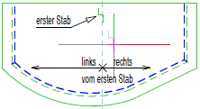 |
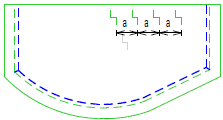 |
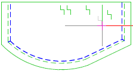 |
|
In Reihe |
Nicht in Reihe |
Der Verlegebereich wird auf einen Kreisbogen (=Rand) bezogen. Die Stäbe werden parallel zueinander verlegt. Die Richtung ist senkrecht zu einer Sehne, die den Bogenanfang mit dem Bogenende verbindet. Wenn der Kreisbogen über 180° aufspannt, wird eine Parallele durch den Kreismittelpunkt zur Sehne gelegt. Die Basislinie kann im Weiteren verändert werden.
Hinweise: |
|
|
·Als Darstellung kann nur „eine Teillänge“ verwendet werden. ·Verknüpfungen sind nicht möglich. |
[Welcher Bogen]
Wenn die Winkeldifferenz größer ist als 180° (z. B. wenn Sie einen Kreis anklicken), erscheint unter der Abfrage die Schaltfläche EW - AW = 180: [EW = Endwinkel / AW = Anfangswinkel]. Geben Sie einen Anfangswinkel ein und klicken Sie auf die Schaltfläche EW - AW = 180:, um den entsprechenden Endwinkel zu berechnen. (Siehe Abfrage [Randabstand] → Funktion [Winkel von-bis]).
§Klicken Sie den Bogen/Kreis auf der Seite an, auf der die Stabanfangspunkte liegen sollen.
[Randabstand]
§Geben Sie einen individuellen Wert ein und bestätigen Sie mit der Eingabetaste. Wenn dieser negativ ist, wird der Abstand zur anderen Seite gemessen.
Sie können den vorgeschlagenen nom c-Wert mit Rechtsklick bestätigen.
Wenn der angeklickte Kreisbogen nicht mit dem Verlegebereich übereinstimmt, können Sie über diese Winkelangabe den Bereich bestimmen. ISBCAD schlägt die Winkel der Anfangs- und Endpunkte der Basislinie bzw. des in den Mittelpunkt verschobenen Durchmessers vor. [Anfangswinkel]; [Endwinkel] Wenn Sie ein Element anklicken, können Sie den Winkel übernehmen. Beachten Sie die Drehrichtung gegen den Uhrzeiger bei der Reihenfolge. Vom gefundenen Punkt wird, auf der Verbindungslinie zum Mittelpunkt, der Schnittpunkt mit der Abstandslinie bestimmt. Wenn die Winkeldifferenz größer ist als 180° (z. B. wenn Sie einen Kreis anklicken), erscheint unter der Abfrage die Schaltfläche EW - AW = 180: [EW = Endwinkel / AW = Anfangswinkel]. §Geben Sie einen Anfangswinkel ein oder bestätigen Sie den Anfangswinkel mit Rechtsklick und klicken Sie auf die Schaltfläche EW - AW = 180:, um den entsprechenden Endwinkel zu berechnen. §Bestätigen Sie die Winkelangaben mit der Eingabetaste oder Rechtsklick. |
Beispiel: Anfangs- und Endwinkel
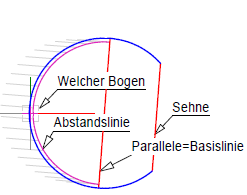 |
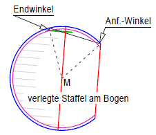 |
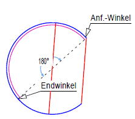 |
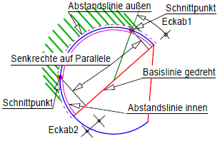 |
Ausgangsparameter nach Anklicken. |
Anf.- u. Endwinkel durch Anklicken festlegen. |
Endwinkel über Knopfdruck. |
Eckab1: Bogenmaß; Eckab2: Sehnenmaß |
[Bezug Ecke]
§Wählen Sie den gewünschten Modus.
0 = Bogenmaß |
Der Abstand wird auf dem angeklickten Bogen abgemessen, nicht auf der Abstandslinie. Durch diesen Schnittpunkt wird ein Lot auf die Basislinie gefällt. Der Schnittpunkt von Lot und Abstandslinie bildet den Anfang bzw. das Ende der Staffel. 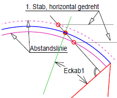 |
1 = Sehnenmaß |
Der Abstand wird auf der Basislinie abgetragen. Hier wird eine Senkrechte gebildet, die den angeklickten Bogen und die Abstandslinie schneidet. 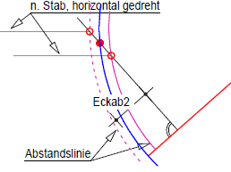 |
[Eckab1]; [Eckab2]
Die Eckabstände beziehen sich auf die angeklickte Randlinie. Sie werden zur Linienmitte hin positiv gemessen. Negative Werte sind nicht zulässig!
§Geben Sie jeweils Werte für die Eckabstände am Anfang und am Ende ein und bestätigen Sie mit der Eingabetaste.
[Bezug Stababstand]
§Geben Sie an, wie die Abstände der Stäbe gemessen werden sollen, wenn nicht noch anschließend der Neigungswinkel bestimmt werden soll.
0 = am Fußpunkt |
Die Abstände werden von Fußpunkt zu Fußpunkt gemessen. Die lotrechten Abstände sind nicht konstant. |
1 = senkrecht zueinander |
Die Abstände werden lotrecht von Stab zu Stab gemessen. |
[Verlege-Faktor]
Die Angabe des Verlege-Faktors ist für die jeweils erste Verlegung erforderlich. Handelt es sich um eine Wiederholung einer, an anderer Stelle gezählten, Verlegung, können Sie auch den Wert 0 (Null) eingeben.
Wenn diese Verlegung in der Stahlliste berücksichtigt werden soll, geben Sie einen Wert ≥1 ein. Der Auszugstext wird nach jeder Änderung aktualisiert.
Im linken Abfragebereich wird Ihnen der aktuell eingestellte Bauteilfaktor angezeigt. Diesen können Sie ggf. unter [Formst | nBautl | Voreinstellg] ändern.
§Geben Sie den Verlege-Faktor ein, mit dem die Anzahl der verlegten Stäbe multipliziert werden soll, oder klicken Sie einen Wert in der Dropdown-Liste an und bestätigen Sie mit Rechtsklick.
Sie können sofort einen weiteren Verlegebereich definieren.